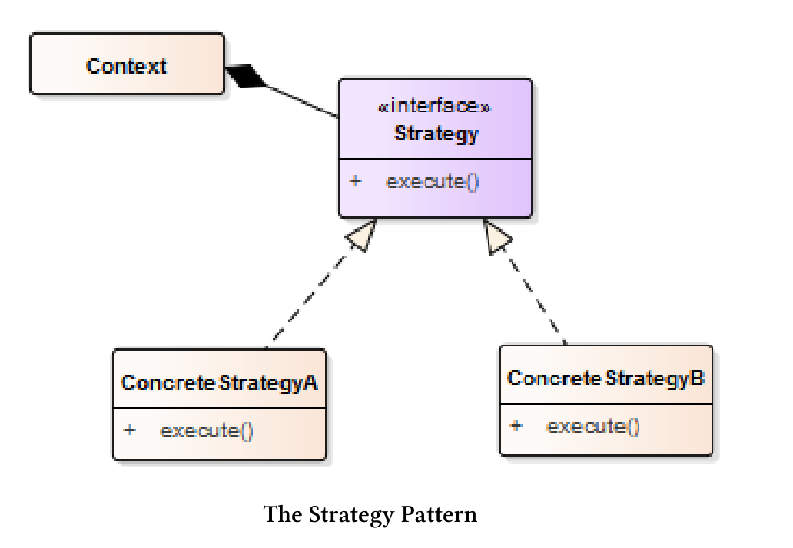
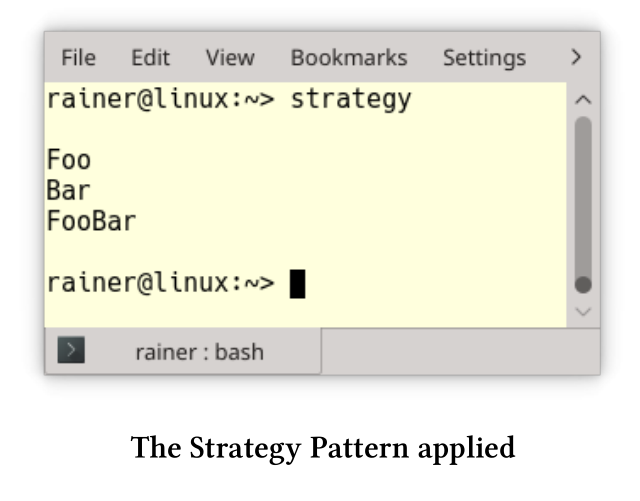
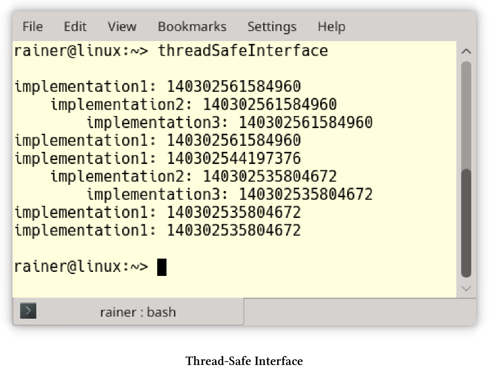
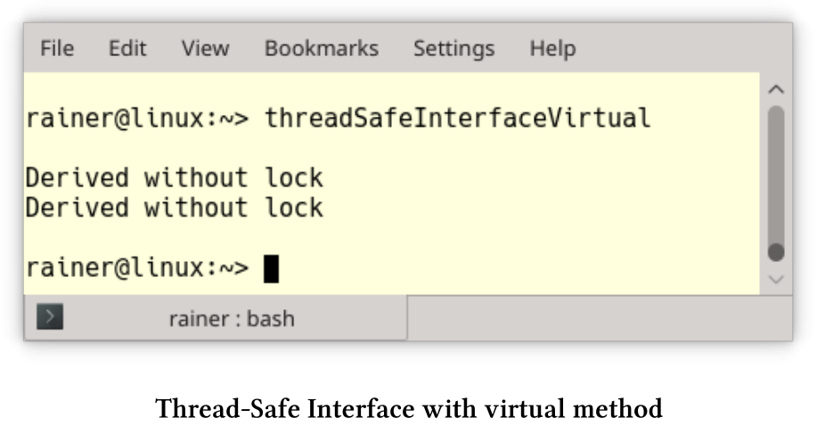
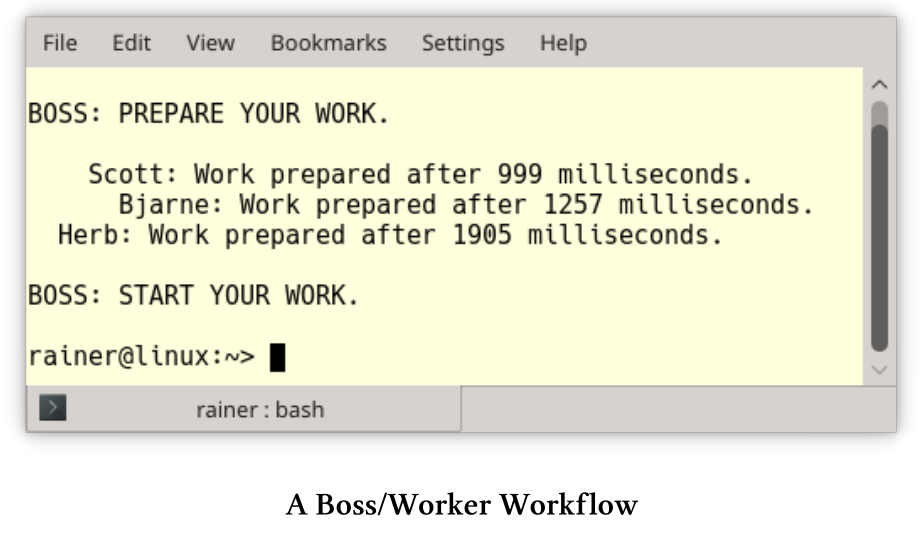

处理突变
如果不同时读写数据，就没有数据竞争，最简单的方法是使用不可变值。除此之外，还有两种典型的策略。首先，用锁来保护临界区，例如：范围锁或策略锁。在面向对象设计中，关键部分的通常是对象(包括它的接口)，线程安全的接口会保护整个对象。其次，修改线程只是在工作完成时发出信号，这就是保护性暂挂模式。
范围锁
范围锁是将RAII(资源获取即初始化)应用于互斥锁，这个用法的关键思想是将资源获取和释放绑定到对象的生存期。顾名思义，对象的生命周期范围是确定的。这里的范围意味着，C++运行时会负责调用对象的析构函数，从而释放资源。
ScopedLock类实现了范围锁。
// scopedLock.cpp
#include <iostream>
#include <mutex>
#include <new>
#include <string>
#include <utility>
class ScopedLock{
private:
std::mutex& mut;
public:
explicit ScopedLock(std::mutex& m) :mut(m) {
mut.lock();
std::cout << "Lock the mutex: " << &mut << std::endl;
}
~ScopedLock() {
std::cout << "Release the mutex: " << &mut << std::endl;
mut.unlock();
}
};
int main() {
std::cout << std::endl;
std::mutex mutex1;
ScopedLock scopedLock1{ mutex1 };
std::cout << "\nBefore local scope" << std::endl;
{
std::mutex mutex2;
ScopedLock scopedLock2{ mutex2 };
}
std::cout << "After local scope" << std::endl;
std::cout << "\nBefore try-catch block" << std::endl;
try {
std::mutex mutex3;
ScopedLock scopedLoack3{ mutex3 };
throw std::bad_alloc();
}
catch (std::bad_alloc& e) {
std::cout << e.what();
}
std::cout << "\nAfter try-catch block" << std::endl;
std::cout << std::endl;
}
ScopedLock通过引用的方式获取互斥对象(第13行)。互斥量在构造函数(第15行)中锁定，在析构函数(第19行)中进行解锁。由于RAII的使用习惯，对象在销毁时，会自动对互斥量进行解锁。

scopedLock1的作用域在主函数体中。因此，mutex1最后才解锁，mutex2(第34行)和mutex3(第42行)也是同理。对于mutex3而言，如果触发异常，也会调用scopedLock3的析构函数。有趣的是，mutex3重用了mutex2的内存，因为两者的地址相同。
C++17支持四种类型的锁：std::lock_guard/std::scoped_lock用于简单场景，std::unique_lock/std::shared_lock用于高级场景，可以在关于锁的章节中了解更多的细节。
拓展阅读
策略锁
编写代码库时，这个库可用于各种领域，包括并发。为了安全起见，要用锁来保护关键部分。倘若库在单线程环境中运行，因为实现使用了重量级同步机制，则会存在性能问题。那么，现在就轮到策略锁登场了。
策略锁是将策略模式的思想应用于锁。这意味着，会将锁定策略放到实例对象中，并使其成为一个可热插拔的组件。那么，什么是策略模式呢?
Strategy Pattern

策略模式是《设计模式：可重用的面向对象软件元素》一书中经典的行为模式之一。其关键思想是定义一系列算法，将它们封装在一个对象中，从而使其成为可热插拔的组件。
策略模式
// strategy.cpp
#include <iostream>
#include <memory>
class Strategy {
public:
virtual void operator()() = 0;
virtual ~Strategy() = default;
};
class Context {
std::shared_ptr<Strategy> _start;
public:
explicit Context() : _start(nullptr) {}
void setStrategy(std::shared_ptr<Strategy> start) { _start = start; }
void strategy() { if (_start)(*_start)(); }
};
class Strategy1 :public Strategy {
void operator()() override {
std::cout << "Foo" << std::endl;
}
};
class Strategy2 : public Strategy {
void operator()() override {
std::cout << "Bar" << std::endl;
}
};
class Strategy3 :public Strategy {
void operator()() override {
std::cout << "FooBar" << std::endl;
}
};
int main() {
std::cout << std::endl;
Context con;
con.setStrategy(std::shared_ptr<Strategy>(new Strategy1));
con.strategy();
con.setStrategy(std::shared_ptr<Strategy>(new Strategy2));
con.strategy();
con.setStrategy(std::shared_ptr<Strategy>(new Strategy3));
con.strategy();
std::cout << std::endl;
}
第6至10行中的抽象类Strategy定义了策略。每个特定的策略，如Strategy1(第20行)、Strategy2(第26行)或Strategy3(第32行)，都必须支持函数调用操作符(第8行)。使用者在Context中集合了各种策略，在第16行设置特定的策略，并在第17行执行它。因为Context通过一个指向Strategy类的指针来执行，所以Strategy1、Strategy2和Strategy3的执行方法是私有的。

具体实现
实现策略锁有两种经典的方法：运行时多态性(面向对象)和编译时多态性(模板)。两种方式各有利弊。
- 优点：
- 运行时多态
- 允许在运行时配置策略锁。
- 了解有面向对象的开发人员，更容易理解。
- 编译时多态
- 无抽象的惩罚。
- 扁平的层次结构。
- 缺点：
- 运行时多态
- 额外需要一个指针。
- 可能有很深的派生层次。
- 编译时多态
- 出错时会有非常详细的信息。
讨论了理论之后，我在两个程序中实现了策略锁。示例中，策略锁可支持无锁、独占锁和共享锁。简单起见，我在内部使用了互斥锁。此外，策略锁的模型也限定了其锁定的范围。
运行时多态
strategizedLockingRuntime.cpp程序中展示了三种互斥锁。
运行时的多态性策略锁
// strategizedLockingRuntime.cpp
#include <iostream>
#include <mutex>
#include <shared_mutex>
class Lock {
public:
virtual void lock() const = 0;
virtual void unlock() const = 0;
};
class StrategizedLocking {
Lock& lock;
public:
StrategizedLocking(Lock& l) :lock(l) {
lock.lock();
}
~StrategizedLocking() {
lock.unlock();
}
};
struct NullObjectMutex {
void lock() {};
void unlock() {};
};
class NoLock :public Lock {
void lock() const override {
std::cout << "NoLock::lock: " << std::endl;
nullObjectMutex.lock();
}
void unlock() const override {
std::cout << "NoLock::unlock: " << std::endl;
nullObjectMutex.unlock();
}
mutable NullObjectMutex nullObjectMutex;
};
class ExclusiveLock : public Lock {
void lock() const override {
std::cout << " ExclusiveLock::lock: " << std::endl;
mutex.lock();
}
void unlock() const override {
std::cout << " ExclusiveLock::unlock: " << std::endl;
mutex.unlock();
}
mutable std::mutex mutex;
};
class SharedLock : public Lock {
void lock() const override {
std::cout << " SharedLock::lock_shared: " << std::endl;
sharedMutex.lock_shared();
}
void unlock() const override {
std::cout << " SharedLock::unlock_shared: " << std::endl;
sharedMutex.unlock_shared();
}
mutable std::shared_mutex sharedMutex;
};
int main() {
std::cout << std::endl;
NoLock noLock;
StrategizedLocking stratLock1{ noLock };
{
ExclusiveLock exLock;
StrategizedLocking stratLock2{ exLock };
{
SharedLock sharLock;
StrategizedLocking startLock3{ sharLock };
}
}
std::cout << std::endl;
}
StrategizedLocking类中有一把锁(第14行)。StrategizedLocking模型是范围锁，因此在构造函数(第16行)中进行锁定，在析构函数(第19行)中进行解锁。Lock(第7 - 11行)是一个抽象类，定义了所有接口。派生类分别是NoLock (第29行)、ExclusiveLock(第41行)和SharedLock(第53行)。SharedLock在std::shared_mutex上可使用lock_shared(第56行)和unlock_shared进行锁定和解锁。每个锁持有一个互斥对象NullObjectMutex(第38行)、std::mutex(第50行)或std::shared_mutex(第62行)。其实，NullObjectMutex就是一个无操作的占位符。互斥对象声明为可变，就意味着可以用在常量方法中使用，比如：lock和unlock中。
空对象
类NullObjectMutex是空对象模式的一个例子，由空方法组成，算是一个占位符，这样便于优化器可以将它完全删除。
编译时多态
基于模板的实现与基于面向对象的实现非常相似。
编译时多态性策略锁
// StrategizedLockingCompileTime.cpp
#include <iostream>
#include <mutex>
#include <shared_mutex>
template <typename LOCK>
class StrategizedLocking {
LOCK& lock;
public:
StrategizedLocking(LOCK& l) :lock(l) {
lock.lock();
}
~StrategizedLocking() {
lock.unlock();
}
};
struct NullObjectMutex {
void lock() {};
void unlock() {};
};
class NoLock {
public:
void lock() const {
std::cout << "NoLock::lock: " << std::endl;
nullObjectMutex.lock();
}
void unlock() const {
std::cout << "NoLock::unlock: " << std::endl;
nullObjectMutex.unlock();
}
mutable NullObjectMutex nullObjectMutex;
};
class ExclusiveLock {
public:
void lock() const {
std::cout << " ExclusiveLock::lock: " << std::endl;
mutex.lock();
}
void unlock() const {
std::cout << " ExclusiveLock::unlock: " << std::endl;
mutex.unlock();
}
mutable std::mutex mutex;
};
class SharedLock {
public:
void lock() const {
std::cout << " SharedLock::lock_shared: " << std::endl;
sharedMutex.lock_shared();
}
void unlock() const {
std::cout << " SharedLock::unlock_shared: " << std::endl;
sharedMutex.unlock_shared();
}
mutable std::shared_mutex sharedMutex;
};
int main() {
std::cout << std::endl;
NoLock noLock;
StrategizedLocking stratLock1{ noLock };
{
ExclusiveLock exLock;
StrategizedLocking stratLock2{ exLock };
{
SharedLock sharLock;
StrategizedLocking startLock3{ sharLock };
}
}
std::cout << std::endl;
}
这次NoLock(第25行)、ExclusiveLock(第38行)和SharedLock(第51行)没有抽象的基类了。结果StrategizedLocking可以用不支持相应接口的对象进行实例化，而这将导致编译时错误。C++20中，可以使用Lockable : template <Lockable Lock> class StrategizedLocking代替template <typename Lock> class StrategizedLocking。这意味着所有使用的锁必须支持Lockable概念。概念需要命名，并且Lockable已经在C++20中定义了。如果没有满足此要求，则编译将失败，并出现简单易懂的错误消息。
两个程序会生成相同的输出:

拓展阅读
- Design Patterns: Elements of Reusable Object-Oriented Software
- Strategy Pattern
- Null Object Pattern
- Pattern-Oriented Software Architecture: Patterns for Concurrent and Networked Objects
线程安全的接口
当程序的关键部分只是一个对象时，那么使用线程安全的接口就在合适不过了。用锁可能会导致性能问题，甚至会导致死锁。下面的伪代码可以清楚地阐明我的观点。
struct Critical{
void method1(){
lock(mut);
method2();
...
}
void method2(){
lock(mut);
...
}
mutex mut;
};
Critical crit;
crit.method1();
使用crit.method1会使互斥锁锁定两次。为了简单起见，这个锁是一个范围锁。当然，这里还有两个问题：
- 当
lock是递归锁时，method2中的第二个lock(mut)是多余的。 - 当
lock不是递归锁时，method2中的第二个lock(mut)会导致未定义行为。大多数情况下，会出现死锁。
线程安全的接口可以避免这两个问题，因为：
- 所有(public)接口都应该使用锁。
- 所有(保护的和私有的)方法都不使用锁。
- 接口只能使用保护的方法或私有方法调用，而公共方法则不能调用。
threadSafeInterface.cpp程序显示了其用法。
// threadSafeInterface.cpp
#include <iostream>
#include <mutex>
#include <shared_mutex>
class Critical {
public:
void interface1() const {
std::lock_guard<std::mutex> lockGuard(mut);
implementation1();
}
void interface2() {
std::lock_guard<std::mutex> lockGuard(mut);
implementation2();
implementation3();
implementation1();
}
private:
void implementation1() const {
std::cout << "implementation1: "
<< std::this_thread::get_id() << std::endl;
}
void implementation2() const {
std::cout << " implementation2: "
<< std::this_thread::get_id() << std::endl;
}
void implementation3() const {
std::cout << " implementation3: "
<< std::this_thread::get_id() << std::endl;
}
mutable std::mutex mut;
};
int main() {
std::cout << std::endl;
std::thread t1([] {
const Critical crit;
crit.interface1();
});
std::thread t2([] {
Critical crit;
crit.interface2();
crit.interface1();
});
Critical crit;
crit.interface1();
crit.interface2();
t1.join();
t2.join();
std::cout << std::endl;
}
包括主线程在内的三个线程都使用了Critical实例。由于线程安全的接口，所有对公开API的调用都是同步的。第35行中的互斥对象是可变的，因此可以在const方法implementation1中使用。
线程安全的接口有三个好处：
- 互斥锁不可能递归调用。在C++中，对非递归互斥对象的递归调用会导致未定义行为，通常都会死锁。
- 该程序使用最小范围的锁定，因此同步的代价最小。仅在关键类的公共或私有方法中使用
std::recursive_mutex将产生重量级的同步，从而遭受性能惩罚。 - 从用户的角度来看，
Critical很容易使用，而同步只是实现的一个细节而已。
三个线程交错的输出：

尽管线程安全的接口看起来很容易实现，但是也需要留意两个风险点。
风险
类中使用静态成员和使用虚接口时，需要特别小心。
静态成员
当类有静态成员时，就必须同步该类实例上的所有成员函数。
class Critical {
public:
void interface1() const {
std::lock_guard<std::mutex> lockGuard(mut);
implementation1();
}
void interface2() {
std::lock_guard<std::mutex> lockGuard(mut);
implementation2();
implementation3();
implementation1();
}
private:
void implementation1() const {
std::cout << "implementation1: "
<< std::this_thread::get_id() << std::endl;
++called;
}
void implementation2() const {
std::cout << " implementation2: "
<< std::this_thread::get_id() << std::endl;
++called;
}
void implementation3() const {
std::cout << " implementation3: "
<< std::this_thread::get_id() << std::endl;
++called;
}
inline static int called{ 0 };
inline static std::mutex mut;
};
Critical类使用了静态成员(第32行)来计算调用成员函数的频率。Critical的所有实例，都使用同一个静态成员，因此必须同步。本例中，临界区为Critical的所有实例。
内联静态成员
C++17中，静态数据成员可以声明为内联。可以在类中定义，以及初始化内联静态数据成员。
struct X { inline static int n = 1; }
虚接口
当重写虚接口函数时，即使重写的函数是私有的，也应该有锁。
// threadSafeInterfaceVirtual.cpp
#include <iostream>
#include <mutex>
#include <thread>
class Base {
public:
virtual void interface() {
std::lock_guard<std::mutex> lockGuard(mut);
std::cout << "Base with lock" << std::endl;
}
private:
std::mutex mut;
};
class Derived : public Base {
void interface() override {
std::cout << "Derived without lock" << std::endl;
};
};
int main() {
std::cout << std::endl;
Base* base1 = new Derived;
base1->interface();
Derived der;
Base& base2 = der;
base2.interface();
std::cout << std::endl;
}
base1->interface和base2.interface中，base1和base2是静态类型是Base，因此interface是一个公开接口。由于接口方法是虚函数，因此在运行时使用派生的动态类型Derived进行。最后，调用派生类Derived的私有接口。

有两种方法可以避免风险：
- 使接口成为非虚接口，这种技术称为NVI(非虚拟接口)。
- 将接口声明为
final:virtual void interface() final;。
扩展阅读
保护性暂挂模式
锁和一些先决条件的组合，是构成保护性暂挂模式的基础件。如果未满足先决条件，则线程将自己置为休眠状态。为了避免数据竞争或死锁，检查线程时会使用锁。
现在，来看看各种情况:
- 处于等待状态的线程，会根据通知更改状态，也可以主动请求更改状态。我把这称为“推拉原则”。
- 等待可以有时限，也可以没有时限。
- 可以将通知发送给一个或所有正在等待的线程。
推拉原则
先来说说推原则。
推原则
大多数情况下，使用条件变量或future/promise来进行线程同步。条件变量或promise将通知发送到正在等待的线程。promise没有notify_one或notify_all方法，而空的set_value调用通常用于模拟通知。下面的程序段展示发送通知的线程和等待的线程。
- 条件变量
void waitingForWork(){
std::cout << "Worker: Waiting for work." << std::endl;
std::unique_lock<std::mutex> lck(mutex_);
condVar.wait(lck, []{ return dataReady; });
doTheWork();
std::cout << "Work done." << std::endl;
}
void setDataReady(){
{
std::lock_guard<std::mutex> lck(mutex_);
dataReady = true;
}
std::cout << "Sender: Data is ready." << std::endl;
condVar.notify_one();
}
- future/promise
void waitingForWork(std::future<void>&& fut){
std::cout << "Worker: Waiting for work." << std::endl;
fut.wait();
doTheWork();
std::cout << "Work done." << std::endl;
}
void setDataReady(std::promise<void>&& prom){
std::cout << "Sender: Data is ready." << std::endl;
prom.set_value();
}
拉原则
线程也可以主动地要求改变状态，而不是被动地等待状态改变。C++中并不支持“拉原则”，但可以用原子变量来实现。
std::vector<int> mySharedWork;
std::mutex mutex_;
std::condition_variable condVar;
bool dataReady{false};
void waitingForWork(){
std::cout << "Waiting " << std::endl;
std::unique_lock<std::mutex> lck(mutex_);
condVar.wait(lck, []{ return dataReady; });
mySharedWork[1] = 2;
std::cout << "Work done " << std::endl;
}
void setDataReady(){
mySharedWork = {1, 0, 3};
{
std::lock_guard<std::mutex> lck(mutex_);
dataReady = true;
}
std::cout << "Data prepared" << std::endl;
condVar.notify_one();
}
有或无时限的等待
条件变量和future有三个用于等待的方法:wait、wait_for和wait_until。wait_for需要一个时间段，wait_until需要一个时间点。
各种等待策略中，消费者线程等待时间为steady_clock::now() + dur。如果promise已经准备好了，就会获取值；如果没准备好，则只显示其id: this_thread::get_it()。
void producer(promise<int>&& prom){
cout << "PRODUCING THE VALUE 2011\n\n";
this_thread::sleep_for(seconds(5));
prom.set_value(2011);
}
void consumer(shared_future<int> fut,
steady_clock::duration dur){
const auto start = steady_clock::now();
future_status status= fut.wait_until(steady_clock::now() + dur);
if ( status == future_status::ready ){
lock_guard<mutex> lockCout(coutMutex);
cout << this_thread::get_id() << " ready => Result: " << fut.get()
<< endl;
}
else{
lock_guard<mutex> lockCout(coutMutex);
cout << this_thread::get_id() << " stopped waiting." << endl;
}
const auto end= steady_clock::now();
lock_guard<mutex> lockCout(coutMutex);
cout << this_thread::get_id() << " waiting time: "
<< getDifference(start,end) << " ms" << endl;
}
通知一个或所有等待线程
notify_one可以唤醒一个等待的线程，notify_all可以唤醒所有等待的线程。使用notify_one时，不能确定哪一个线程会被唤醒，而其他条件变量则保持在等待状态。因为future和promise之间存在关联性，所以这种情况在std::future中是不可能发生的。如果想模拟一对多的关系，那么应该使用std::shared_future而不是std::future，因为std::shared_future是可以复制的。
下面的程序显示了一个简单的工作流，promise和future之间是一对一/一对多的关系。
// bossWorker.cpp
#include <future>
#include <chrono>
#include <iostream>
#include <random>
#include <string>
#include <thread>
#include <utility>
int getRandomTime(int start, int end) {
std::random_device seed;
std::mt19937 engine(seed());
std::uniform_int_distribution<int> dist(start, end);
return dist(engine);
}
class Worker {
public:
explicit Worker(const std::string& n) :name(n) {}
void operator()(std::promise<void>&& prepareWork,
std::shared_future<void> boss2Worker) {
// prepare the work and notify the boss
int prepareTime = getRandomTime(500, 2000);
std::this_thread::sleep_for(std::chrono::microseconds(prepareTime));
prepareWork.set_value();
std::cout << name << ": " << "Work prepared after "
<< prepareTime << " milliseconds." << std::endl;
// still waiting for the permission to start working
boss2Worker.wait();
}
private:
std::string name;
};
int main() {
std::cout << std::endl;
// define the std::promise = > Instruction from the boss
std::promise<void> startWorkPromise;
// get the std::shared_future's from the std::promise
std::shared_future<void> startWorkFuture = startWorkPromise.get_future();
std::promise<void> herbPrepared;
std::future<void> waitForHerb = herbPrepared.get_future();
Worker herb(" Herb");
std::thread herbWork(herb, std::move(herbPrepared), startWorkFuture);
std::promise<void> scottPrepared;
std::future<void> waitForScott = scottPrepared.get_future();
Worker scott(" Scott");
std::thread scottWork(scott, std::move(scottPrepared), startWorkFuture);
std::promise<void> bjarnePrepared;
std::future<void> waitForBjarne = bjarnePrepared.get_future();
Worker bjarne(" Bjarne");
std::thread bjarneWork(bjarne, std::move(bjarnePrepared), startWorkFuture);
std::cout << "BOSS: PREPARE YOUR WORK.\n " << std::endl;
// waiting for the worker
waitForHerb.wait(), waitForScott.wait(), waitForBjarne.wait();
// notify the workers that they should begin to work
std::cout << "\nBOSS: START YOUR WORK. \n" << std::endl;
startWorkPromise.set_value();
herbWork.join();
scottWork.join();
bjarneWork.join();
}
该程序的关键思想是boss(主线程)有三个员工：herb(第53行)、scott(第58行)和bjarne(第63行)，每个worker由一个线程表示。老板在第64行等待，直到所有的员工完成工作。这意味着，每个员工在任务下发后的任意时间点，都可以向老板发送完成通知。因为会转到std::future，所以员工到老板的通知是一对一的(第30行)。而从老板到员工的工作指令，则是一对多的通知(第73行)。对于这个一对多的通知，需要使用std::shared_future。

扩展阅读